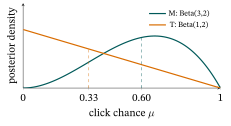

16 Bandits & Online Recommendation
Every model so far learned from a fixed log, and how that log was collected was not part of the model. A live recommender does not get a dataset handed to it: it creates its own, because it only ever learns about the films it chose to show. Should Ann’s film site keep showing what it believes she likes, or risk a film it knows nothing about? This chapter builds the classic answers to that one trade-off, from zero: the multi-armed bandit, then three strategies, ε-greedy, Upper Confidence Bound (UCB) and Thompson sampling, and finally contextual bandits, which turn the whole thing into online click-through rate (CTR) prediction with exploration.
What this chapter assumes. Basic probability: a Bernoulli trial is one try with two outcomes (here click or no click) whose chance is an unknown number \(\mu\); expectation (the average over many tries); and the Beta distribution as a “distribution over a probability” (the Probability primer, §2). It also assumes the click / CTR label (Click-Through Rate Prediction & Feature Interactions §1).
Section 5 also uses the idea of adding up a curve’s heights (an integral), taken on trust where it appears. Section 6 uses vectors and matrices: the transpose \(\mathbf x^{\top}\) (a column turned into a row), a matrix times a vector, the outer product, the identity and the inverse (Linear Algebra for Machine Learning §§1–3 and §6). The chapter connects to the feedback-loop caution of Evaluation Metrics §12 and is the one-step special case of reinforcement learning, which Appendix D (Reinforcement Learning for Recommendation) takes up. This is the second Frontiers chapter: calibrated depth, not a full course on bandit theory.
1. The online setting: bandit feedback and the explore–exploit trade-off
Ann opens the film site and is shown Titanic, which she loves. Next week it shows her Titanic again, and the week after. Is the site right to repeat what works, or should it risk a film it knows nothing about? This section names that dilemma and the kind of feedback that causes it.
The click-through rate (CTR) chapter trained on a frozen log: a fixed table of impressions (each time a film was shown to a viewer), each already labeled clicked / not-clicked. A live system is different in one decisive way: it runs in a loop, and at every step it must act: \[ \text{round } t:\quad \text{choose an item } a_t \;\to\; \text{show it} \;\to\; \text{observe reward } r_t\ (\text{click}=1) \;\to\; \text{update}. \]
The catch is in the third arrow: you observe the reward only for the item you chose, never the counterfactual “what if I’d shown a different one?”. Show Ann the Matrix and you learn about the Matrix, and nothing about Titanic or Vendetta. This is bandit feedback. The name comes from the slot machine, a “one-armed bandit”: a row of machines with unknown payouts is a multi-armed bandit, and pulling a lever means showing an item. Supervised learning has no counterpart to what this feedback forces on the site, a choice between exploiting and exploring, set out below.
- Exploit (Titanic again): show the item with the highest estimated reward so far. Safe, but if your estimates are wrong you never find out.
- Explore (Vendetta): show an item you are unsure about, to improve your estimate. Costly now (it may flop), but it is the only way to discover a better item.
This is not a corner case. It is the heart of three everyday recommendation problems:
- Cold-start. A brand-new item has no interactions, so a model that learns only from past clicks has no evidence about it. Item features can give a first guess (Traditional Recommender Systems §7), but only showing the item produces evidence about how people actually respond.
- The feedback loop. A model that only ever exploits its current beliefs keeps showing the same items, so the data it collects confirms those beliefs: the rich-get-richer trap flagged in Evaluation Metrics §12.
- Non-stationarity. Tastes drift over time, so yesterday’s best item must be re-checked: a film that converts at \(10\%\) in January may convert at \(4\%\) in June, and an average over both months describes neither.
A good bandit algorithm is just a principled rule for how much to explore, and which uncertain arm to try.
In one line: showing one of our \(3\) films reveals one click or no-click for just \(1\) of them (a third of the picture, and far less in a real catalogue), so the site must trade repeating what it believes against trying what it does not know.
2. The multi-armed bandit and regret
Tonight the site can show Ann one of two films and cannot know in advance which she will click. Every wrong guess costs a click that the right guess would have earned. This section turns that cost into one number and counts it on a small example. The problem of choosing among arms in sequence was set out by Thompson (1933), and Robbins (1952) gave an early statement of it.
Strip the problem to its core. There are \(K\) arms (items): in the example below \(K=2\), the films Matrix and Titanic. Each pull of arm \(i\) is a Bernoulli trial: a click or no click, with an unknown click chance \(\mu_i\) (the arm’s true CTR, also its mean reward). At each round you pull one arm and see its reward. The rule that chooses the arm each round, using everything seen so far, is called a policy (a plan of action; “always pull the arm with more clicks so far” is one policy). Your goal over \(T\) rounds is to maximize total reward, which is the same as to minimize regret.
Regret is the price of not knowing the best arm in advance, the “what might have been” of hindsight: the reward you would on average have collected by always pulling the best arm, minus what your policy on average collected.
\[ \text{Regret}(T) \;=\; \underbrace{T\,\mu^{*}}_{\text{always pull the best}} \;-\; \sum_{t=1}^{T}\mu_{a_t} \;=\; \sum_{t=1}^{T}\big(\mu^{*}-\mu_{a_t}\big), \]
where \(\mu^{*}=\max_i \mu_i\) is the best arm’s mean and \(a_t\) is the arm you pulled at round \(t\). The formula uses the arms’ means, so it counts the expected loss and not the luck of single clicks. Every round you pull a sub-optimal arm, you add its gap \(\Delta_i=\mu^{*}-\mu_i\) to the regret.
Worked example: regret by hand. Two arms: the best, “Matrix,” has \(\mu^{*}=0.6\); a worse one, “Titanic,” has \(\mu=0.3\), so its gap is \(0.6-0.3=0.3\). (Here an arm’s click chance is the site-wide chance over many visitors, not one viewer’s taste.) Suppose over a run your policy pulled Titanic 3 times (and Matrix the rest). The regret contributed by those three pulls is \[ 3 \times (0.6 - 0.3) = \mathbf{0.9}. \] That is \(0.9\) clicks given up, in expectation, for three explorations of the worse arm.
How fast should regret grow? The best known policies keep growing, but slowly: the growth is logarithmic. Here \(\ln\) is the natural logarithm, which grows slowly: \(\ln 100=4.6\) and \(\ln 10{,}000=9.2\), so a hundred times more rounds only doubles it.
Upper Confidence Bound 1 (UCB1), the rule built in §4 that adds a bonus to arms it has tried few times, pulls a sub-optimal arm only about \(\ln T/\Delta_i^{2}\) times up to a constant factor, so its total regret grows like \(\sum_i \ln T/\Delta_i\) (Auer, Cesa-Bianchi & Fischer, 2002; the constants are theirs, not derived here). In this shape \(\ln T\) says exploration thins out as evidence accrues, and \(1/\Delta_i\) says a smaller gap is harder to detect, so a close-but-worse arm costs more pulls to rule out.
Theory; a first reading can skip to the table below. Can any policy do better than logarithmic growth? Not if it is consistent, meaning that on every bandit of the class (here \(K\) arms with Bernoulli click rewards) its regret grows more slowly than any power \(T^{c}\) with \(c>0\). A tiny case: ε-greedy (defined just below) has regret \(0.015\,T\) on the game above, which grows like \(T^{1}\), so it is not consistent; \(\ln T\) grows more slowly than any \(T^{c}\). For consistent policies the regret must still grow at least logarithmically in \(T\). This is the lower bound of Lai and Robbins (1985). Lattimore and Szepesvári (2020) state it as Theorem 16.2 in their Chapter 16, for any class of arms whose distributions can be chosen independently of one another, Bernoulli click arms included; we use the result and do not prove it.
A policy that never stops exploring at a fixed rate is not consistent, and its regret grows like \(T\) itself. The simplest such policy is ε-greedy, built in §3: with probability \(\varepsilon\) (here \(0.1\)) pull a random arm, otherwise the arm with the best average so far; until each arm has been pulled once it picks at random, since an arm with no pulls has no average. The table sets it against UCB1 (built in §4: pull the arm whose average plus an uncertainty bonus is largest) on the game above, both breaking a tie between equal averages in favour of the first-listed arm, Matrix (the other tie rule is given below).
Thompson sampling (§5) is not in the table, and the chapter makes no log-growth claim for it. The “seed 16” in its caption is the starting value that fixes the computer’s random draws, so the printed digits are those of one run.
| Rounds \(T\) | ε-greedy (\(\varepsilon=0.1\)) | UCB1 |
|---|---|---|
| 100 | 4.2 | 6.9 |
| 1,000 | 18.2 | 23.4 |
| 10,000 | 152.7 | 47.2 |
Read the growth per tenfold more rounds, from the same batch of \(200\) games. For ε-greedy divide the averages (\(18.2/4.2\) and \(152.7/18.2\)); for UCB1 subtract them (\(23.4-6.9\) and \(47.2-23.4\)); the entries are computed before rounding, as the table below shows.
| Step | ε-greedy: regret multiplied by | UCB1: regret added |
|---|---|---|
| \(100\to1{,}000\) | 4.3 | 16.6 |
| \(1{,}000\to10{,}000\) | 8.4 | 23.8 |
Two tenfold steps show the trend: a straight line multiplies the regret by \(10\) at each step, while \(\ln T\) adds the same amount at each step. ε-greedy heads for the factor \(10\) of straight-line growth. The formula \(\varepsilon\cdot\tfrac{K-1}{K}\cdot\Delta\cdot T\) (derived in §3, where its value per round is worked out) gives \(1.5\), \(15\) and \(150\) at the three horizons, and the simulated \(4.2\), \(18.2\) and \(152.7\) sit above it early on. UCB1 instead adds an amount of the same order per tenfold, the signature of \(\ln T\) (the “Does exploration stop?” paragraph below shows it more cleanly). The careful-reader box below accounts for the early excess and checks longer runs.
The early rows are not a win for UCB1: at \(T=100\) and \(T=1{,}000\) it has lost more clicks than ε-greedy, because exploring carefully costs something up front. It pays off only later. In the same batch of \(200\) games UCB1 is still behind at \(T=1{,}500\) (\(27.5\) against \(25.6\) for ε-greedy) and ahead at \(T=2{,}000\) (\(30.5\) against \(33.1\)). A larger check of \(50{,}000\) games per rule (seed 16) puts the crossing near \(1{,}700\) rounds (the simulation detail is in the careful-reader box below).
Does exploration stop? No. Over a batch of \(20\) simulated games of UCB1 (seed 16) the worse arm was pulled \(76\), \(147\) and \(213\) times by \(T=1{,}000\), \(10{,}000\) and \(100{,}000\). Regret is \(0.3\) per worse-arm pull, so these games lose about \(23\), \(44\) and \(64\) clicks: roughly \(21\) and then \(20\) more per tenfold step, constant as \(\ln T\) predicts (with only \(20\) games a rough guide, not a match for the \(200\)-game table). The count keeps growing, by about \(70\) for each tenfold more rounds, but as a share of all rounds it falls from \(7.6\%\) to \(1.5\%\) to \(0.2\%\). That is what “exploration thins out” means. It never reaches zero, and a good policy makes each further pull of a worse arm rarer.
In one line: each pull of a worse arm costs its gap (\(3\times0.3=0.9\) clicks), and a good policy’s total regret grows like \(\ln T\) while a fixed-rate explorer’s grows like \(T\): by \(10{,}000\) rounds, \(152.7\) clicks lost against \(47.2\).
For the careful reader: how the simulations were run. Four notes sit behind the tables above. The printed digits are those of one seeded run, and another generator gives the same picture within the sampling error stated here.
- The early excess. The first pulls of ε-greedy, made before any arm has an average, cost about \(0.45\) in all (the table’s rule picks at random until both arms have been pulled: three rounds on average, \(0.15\) each). That is little of the \(2.7\) clicks by which \(4.2\) exceeds \(1.5\) at \(T=100\); the rest is probably early greedy mistakes, when a lucky click on the worse arm is believed (a likely cause that this run does not isolate; §3 counts how often a game starts that way).
- A longer run. A separate run of \(20\) games (seed 16) to \(100{,}000\) rounds gives \(1{,}502\) for ε-greedy, close to the formula’s \(1{,}500\).
- Another random generator. A rerun agrees with the printed digits within sampling error, not to the last digit. The crossing is \(1{,}675\) rounds with the rule of the table and \(1{,}727\) if ε-greedy makes its first pulls in order as UCB1 does, with a sampling error of about \(6\) rounds (one standard error: the typical amount the estimate would move if the whole check were run again).
- Two conventions. UCB1’s \(t\) is the number of the current round, one more than the pulls so far that §4 counts, which changes its regret by less than \(0.1\). And with equal averages broken at random instead of to the first-listed arm, ε-greedy loses a little more (in a batch of \(300{,}000\) games about \(4.9\) at \(T=100\) and \(19.3\) at \(T=1{,}000\), against about \(4.1\) and \(18.2\) with the table’s tie rule in the same batch of \(300{,}000\) games), and the crossing moves down to about \(1{,}560\).
3. ε-greedy: the simplest balance
Always showing Ann’s current favourite fails when the first click was luck: one lucky click on Vendetta could make the site show it forever, while Titanic is never tried again. The cheapest repair is to leave a small slice of evenings to chance. This section builds that rule and counts what the slice costs.
The crudest workable rule keeps a running empirical mean \(\hat\mu_i\) for each arm (its clicks divided by its pulls, so \(2\) clicks in \(3\) pulls give \(0.667\); an arm with no pulls has no mean yet, since \(0\) clicks over \(0\) pulls is undefined) and flips a biased coin every round:
- with probability \(1-\varepsilon\), exploit: pull \(\arg\max_i \hat\mu_i\), that is, the arm \(i\) whose estimate \(\hat\mu_i\) is largest;
- with probability \(\varepsilon\), explore: pull a uniformly random arm.
The single knob \(\varepsilon\in[0,1]\) (“epsilon,” the standard symbol for a small quantity) sets the explore rate. The name is exact: greedy means “take the best-looking option,” and the \(\varepsilon\) is the small slice of the time you don’t. The rule is old and has no single source that this chapter cites.
Worked example: selection probabilities. With \(K=2\) arms and \(\varepsilon=0.1\), the best arm is pulled when you exploit (prob \(1-\varepsilon=0.9\)) or when you explore and the coin happens to land on it (prob \(\varepsilon\cdot\tfrac1K=0.1\cdot0.5=0.05\)): \[ P(\text{best}) = 1-\varepsilon+\tfrac{\varepsilon}{K} = 0.9+0.05 = \mathbf{0.95},\qquad P(\text{other}) = \tfrac{\varepsilon}{K} = \mathbf{0.05}. \] Simple, and a fixed-\(\varepsilon\) rule is often a strong baseline in practice (a claim from practice, not tested here). But it has two flaws you can read straight off the rule: it explores forever at rate \(\varepsilon\) even once an arm is obviously best (wasteful), and when it explores it picks uniformly, wasting pulls on arms already known to be bad instead of on the genuinely uncertain ones. The next two methods fix exactly those.
The cost of exploring, as a number. That “forever” is not free. With \(K\) arms, ε-greedy spends \(\varepsilon\cdot\frac{K-1}{K}\) of all traffic on known-inferior arms permanently. At \(\varepsilon=0.1,\ K=10\) that is \(0.1\times\frac{9}{10}=9\%\) of impressions, forever, and it is why the ε-greedy column of the regret table in §2 grows like a straight line: on the two-arm game there (\(\Delta=0.3\)) each round costs \(\varepsilon\cdot\frac12\cdot0.3=0.015\) clicks, so \(T\) rounds cost \(0.015\,T\).
The knob at its ends. At \(\varepsilon=0\) the rule never explores: in \(2{,}000\) games of \(2{,}000\) rounds each (seed 16, \(\mu=0.6\) and \(0.3\)) it ended up pulling the worse arm more often in \(14.5\%\) of them, locked in by an unlucky first click (about \(20.5\%\) if equal averages are tied at random rather than to the better arm). The unlucky start is easy to count by hand: Matrix’s first pull misses (chance \(0.4\)) and Titanic’s first pull clicks (\(0.3\)), so \(0.4\times0.3=0.12\), or \(12\%\) of games, begin with the worse arm looking better, a little below the measured \(14.5\%\), which also counts later early misses.
At \(\varepsilon=1\) every pull is random and each round costs half the gap, \(0.5\times0.3\) clicks, ten times the cost per round at \(\varepsilon=0.1\). The useful values lie in between, and the next two methods avoid the choice. Upper Confidence Bound (UCB) and Thompson sampling (next) explore adaptively, so their exploration decays as certainty grows, which is what lets UCB1’s regret grow only like \(\ln T\) (Auer et al., as in §2; this chapter makes no such claim for Thompson sampling). Many production systems prefer adaptive rules to a fixed \(\varepsilon\) (a claim from practice, not tested here).
In one line: with \(K=2\) and \(\varepsilon=0.1\) the best arm is pulled with probability \(0.95\) each round, and at \(K=10\) the rule wastes \(9\%\) of all impressions forever.
4. UCB: optimism under uncertainty
A fixed slice of chance wastes evenings on films the site already knows are weak, and spends them evenly even when one film has barely been tried. Suppose Titanic has been shown once and Matrix three times: which deserves the next try? This section builds a rule that answers by how little the site knows.
Upper Confidence Bound (UCB) replaces the coin flip with a principle: be optimistic about arms you are unsure of. Score each arm by its empirical mean plus a bonus that is large when the arm has been tried few times, and pull the highest score. The classic UCB1 rule is
\[ \text{UCB}_i \;=\; \underbrace{\hat\mu_i}_{\text{exploit: how good it looks}} \;+\; \underbrace{\sqrt{\frac{2\ln t}{n_i}}}_{\text{explore: how unsure we are}}, \]
where \(t\) is the total number of pulls so far and \(n_i\) the number of pulls of arm \(i\). The example below and E3 use this count; §2’s simulation uses the round number, which is one more. Decode the bonus: it shrinks as \(n_i\) grows (more data \(\to\) less uncertainty \(\to\) smaller bonus) and grows slowly with \(t\) (an arm ignored for a long time looks ever more “worth re-checking”; for \(n_i=3\) the bonus is \(0.961\) at \(t=4\) and \(1.752\) at \(t=100\); at \(t=100\) it is \(3.03\), \(1.75\), \(0.96\) and \(0.30\) for \(n_i=1\), \(3\), \(10\) and \(100\)). As \(n_i\) falls toward \(0\) the bonus grows without limit, and the formula does not allow \(n_i=0\), so implementations pull each arm once first.
The score is an upper confidence bound in this sense: the bonus is sized so that the arm’s true click rate (a number between \(0\) and \(1\)) is unlikely to lie above \(\hat\mu_i\) plus the bonus; the constant \(2\) and the \(\ln t\) are from Auer et al. (2002), whose analysis is not repeated here.
Pulling the highest upper bound means: either the arm really is good (high \(\hat\mu_i\)) or we don’t yet know it isn’t (high bonus), and either way it deserves a pull. No random coin: exploration is targeted at the uncertain arms.
Worked example: UCB explores the worse-looking arm. The site shows one of two films to each visitor and counts clicks. After \(t=4\) total pulls, arm M (Matrix) has been pulled \(n_M=3\) times with \(2\) clicks, so \(\hat\mu_M = 2/3 \approx 0.667\); arm T (Titanic; in this section and the next, \(T\) names this arm, not the number of rounds) has been pulled \(n_T=1\) time with \(0\) clicks, so \(\hat\mu_T=0\). The bonuses use \(\ln 4 = 1.386\): \[ \begin{gathered} \text{UCB}_M = 0.667 + \sqrt{\tfrac{2(1.386)}{3}} = 0.667 + 0.961 = \mathbf{1.628},\\[4pt] \text{UCB}_T = 0 + \sqrt{\tfrac{2(1.386)}{1}} = 0 + 1.665 = \mathbf{1.665}. \end{gathered} \]
UCB pulls T (\(1.665 > 1.628\)): the arm whose mean (\(0\)) is far worse, because it has barely been tried and its bonus dwarfs the gap. That is optimism doing its job: don’t write off an arm you’ve only seen once. (The UCB index can exceed \(1\); it is a score to compare, not a probability.)

In one line: UCB scores arm M at \(1.628\) and arm T at \(1.665\), so it tries T even though T’s mean (\(0\)) is \(0.667\) below M’s.
5. Thompson sampling: the Bayesian balance
UCB’s bonus is one fixed formula, and it pushes toward the least-tried film, even when that film looks hopeless. Suppose the site instead held a rough guess for each film’s click chance and let each guess take a turn at random. This section builds that, and checks how often the underdog gets its turn.
Thompson sampling (named for W. R. Thompson, who described the idea in 1933) explores by a different, simple idea: keep a probability distribution over each arm’s true CTR, and at each round sample one value from each arm’s distribution and pull whichever sample is largest. Arms you are unsure about have wide distributions, so they sometimes draw a high sample and get explored; arms you’ve pinned down have narrow distributions and get pulled mostly when they really are best. Exploration falls out of the uncertainty itself, with no exploration-rate knob (the prior, below, is a choice, but it is not a rate). In round 1 of the ten-round table below, M draws \(0.25\) and T draws \(0.28\), so T is pulled.
For click/no-click rewards the natural distribution is the Beta distribution, \(\text{Beta} (\alpha,\beta)\), a distribution over a probability in \([0,1]\). Your belief about an arm’s click chance before any data is the prior; start each arm at \(\text{Beta}(1,1)\), which is flat: every click chance between \(0\) and \(1\) is equally likely. After seeing \(s\) clicks and \(f\) non-clicks, the updated belief is the posterior, \[ \text{Beta}(1+s,\ 1+f),\qquad \text{with mean } \frac{1+s}{(1+s)+(1+f)} . \] That clean “just add the counts” update is why Beta is used: it is the conjugate prior (“conjugate” means joined together: prior and posterior stay in one family) of the Bernoulli click, meaning the posterior stays a Beta, so updating is bookkeeping, not integration.
Worked example: Beta posteriors. Arm M has \(2\) clicks and \(1\) non-click \(\to \text{Beta}(1+2,\,1+1)=\text{Beta}(3,2)\), posterior mean \(\tfrac{3}{3+2}=\mathbf{0.60}\). Arm T has \(0\) clicks and \(1\) non-click \(\to \text{Beta}(1,2)\), posterior mean \(\tfrac{1}{1+2}=\mathbf{0.333}\). The spreads are close, with a standard deviation (a measure of width) of \(0.200\) for M and \(0.236\) for T, so with this little data the means do most of the separating.

Worked example: ten rounds of draws. Each round draws once from each posterior and pulls the larger draw. Ten rounds, seed 1:
| \(t\) | 1 | 2 | 3 | 4 | 5 | 6 | 7 | 8 | 9 | 10 |
|---|---|---|---|---|---|---|---|---|---|---|
| M draw | 0.25 | 0.27 | 0.88 | 0.73 | 0.25 | 0.40 | 0.24 | 0.52 | 0.54 | 0.64 |
| T draw | 0.28 | 0.00 | 0.65 | 0.41 | 0.55 | 0.10 | 0.22 | 0.19 | 0.32 | 0.08 |
| Pull | T | M | M | M | T | M | M | M | M | M |
In rounds 1 and 5 T’s draw is the larger, so T is pulled although its mean (\(0.333\)) is below M’s (\(0.60\)). Those are the exploration. In the long run, with both posteriors held fixed as in these ten rounds, integrating over both distributions gives \(P(\text{M's draw beats T's})=\mathbf{0.800}\) exactly: add up, over every value \(x\) that M’s draw could take, the height of M’s \(\text{Beta}(3,2)\) curve at \(x\), which is \(12x^{2}(1-x)\), times the chance \(1-(1-x)^{2}\) that T’s draw lies below \(x\); that integral is \(4/5\) (a calculus fact taken on trust here; a \(100{,}000\)-round simulation with seed 16 gives \(0.7995\), agreeing). So T’s draw wins the other \(20\%\) of rounds, one in five, and two in ten is what to expect.
Exploration fades. Give each arm ten times the pulls (M: \(30\) instead of \(3\); T: \(10\) instead of \(1\)) at the arms’ true rates of §2, \(0.6\) and \(0.3\): M then has \(18\) clicks and \(12\) non-clicks, \(\text{Beta}(19,13)\), and T has \(3\) clicks and \(7\) non-clicks, \(\text{Beta}(4,8)\). T’s draw now beats M’s in only \(5.5\%\) of rounds (a \(200{,}000\)-round simulation, seed 16; the exact integral gives \(5.5\%\) too).
Ten times the pulls again (M: \(300\) pulls, \(180\) clicks, \(\text{Beta}(181,121)\); T: \(100\) pulls, \(30\) clicks, \(\text{Beta}(31,71)\)) and T’s draw wins only about \(9\times10^{-8}\) of rounds, roughly nine in a hundred million. Three sizes suffice because each ten-fold step multiplies the data and the underdog’s share falls every time. Across the three sizes, each ten times the last, the share falls from \(20\%\) to \(5.5\%\) to almost none. As data arrives both posteriors narrow toward their true CTRs, and the exploration extinguishes itself. Chapelle and Li (2011) report Thompson sampling as highly competitive with other methods on simulated and real data, and easy to implement.
In one line: with \(\text{Beta}(3,2)\) for M and \(\text{Beta}(1,2)\) for T, M’s draw wins \(80\%\) of rounds and T’s the other \(20\%\); T’s share falls to about \(5.5\%\) once the posteriors rest on \(30\) and \(10\) pulls, and to about nine in a hundred million at \(300\) and \(100\).
6. Contextual bandits: when the best arm depends on who is asking
So far every visitor gets the same choice: Ann, who loves Titanic, and Cara, who has not seen it, are treated alike. A film that is a good pull for one is a poor pull for the other. This section lets the choice depend on who is asking, and keeps the confidence bonus of the UCB section.
Plain bandits assume each arm has one CTR for everybody. Real recommendation does not. A contextual bandit adds a context \(\mathbf x_t\) (a feature vector for the user \(+\) item \(+\) situation, exactly the CTR features of Click-Through Rate Prediction & Feature Interactions §2) and lets the expected reward depend on it. The standard linear form, LinUCB (linear UCB), assumes the reward is roughly linear in the context,
\[ \mathbb E[r \mid \mathbf x] \approx \theta^{\top}\mathbf x , \]
where \(\theta\) is a vector of weights, one per feature of \(\mathbf x\), and \(\theta^{\top}\mathbf x\) (the row \(\theta^{\top}\) times the column \(\mathbf x\)) is their weighted sum. For example, describe a film by \((\text{romance},\text{action})\): Titanic, shown to a viewer who likes romance, is \(\mathbf x=(1,0)\), and with \(\theta=(0.5,0)\) the estimate is \(0.5\times1+0\times0=0.5\). (Matrix, capitalised, is always the film; the array \(A\) below is a matrix.)
It estimates \(\theta\) by ridge regression: least squares with an extra penalty on large coefficients (the L2 penalty, Loss Functions & Regularizers §5.1), which keeps a fit from swinging wildly on a few clicks (the example below shows it: one click gives \(\hat\theta=(0.5,0)\), not \((1,0)\)). It keeps two running tallies, starting from the identity matrix \(I\) (ones on the diagonal, zeros elsewhere; this start is the ridge penalty): \[ A = I + \sum \mathbf x\mathbf x^{\top},\qquad \mathbf b=\sum r\,\mathbf x,\qquad \hat\theta=A^{-1}\mathbf b, \]
where both sums run over the contexts shown so far (and \(r\) is the reward seen for each).
The rule then scores a candidate context by an estimate plus a bonus, the §4 idea in feature space: \[ \text{score}(\mathbf x)\;=\;\hat\theta^{\top}\mathbf x\;+\;\alpha\sqrt{\mathbf x^{\top}A^{-1}\mathbf x}. \]
The square root is small for contexts like those already seen and large for unlike ones; \(\alpha\) is a knob that sets how much the bonus counts (the same letter as the first number of \(\text{Beta}(\alpha,\beta)\) in §5, but a different job). After the chosen \(\mathbf x\) is shown and reward \(r\) seen, update \(A\leftarrow A+\mathbf x\mathbf x^{\top}\) and \(\mathbf b\leftarrow \mathbf b+r\,\mathbf x\).
Reading the two new pieces. The inverse \(A^{-1}\) undoes \(A\), so that \(AA^{-1}=I\). For a diagonal matrix (entries only on the diagonal; \(\text{diag}(a,b)\) has \(a\) and \(b\) there and \(0\) elsewhere) flip each diagonal entry: \(\text{diag}(2,1)^{-1}=\text{diag}(0.5,\,1)\). The quadratic form \(\mathbf x^{\top}A^{-1}\mathbf x\) is one number: multiply the row \(\mathbf x^{\top}\) by \(A^{-1}\), then by the column \(\mathbf x\). For \(\mathbf x=(1,0)\): \((1,0)\,\text{diag}(0.5,1)=(0.5,\,0)\), and \((0.5,0)\cdot(1,0)=0.5\). For \(\mathbf x=(0,1)\) the same steps give \(1\). With a diagonal \(A\) this is just \(\sum_j x_j^{2}/a_j\), so each pull along direction \(j\) raises \(a_j\) and shrinks that direction’s bonus.
Worked example: the film alone as context. Take as the context only the film’s two features, \((\text{romance},\text{action})\): the romance and action axes of the genre vectors in Traditional Recommender Systems §2 (its sci-fi axis is dropped here), so Titanic is \((1,0)\) and Matrix is \((0,1)\). So far the site has shown Titanic once and Ann clicked (\(r=1\)). With \(\mathbf x=(1,0)\) the outer product \(\mathbf x\mathbf x^{\top}\) is the matrix with a single \(1\) in the top-left corner, and \(r\mathbf x=(1,0)\), so \[ A=\begin{pmatrix}2&0\\0&1\end{pmatrix},\quad \mathbf b=\begin{pmatrix}1\\0\end{pmatrix},\quad \hat\theta=A^{-1}\mathbf b=\begin{pmatrix}0.5\\0\end{pmatrix},\quad A^{-1}=\begin{pmatrix}0.5&0\\0&1\end{pmatrix}. \]
One click gives \(\hat\theta=(0.5,0)\), half of the \(1\) that least squares on that click alone would give: the identity start pulls the estimate toward \(0\), which is the ridge penalty at work. With \(\alpha=1\), the two candidates score \[ \begin{gathered} \text{Titanic: } 0.5+\sqrt{0.5}=0.5+0.707=\mathbf{1.207},\\[2pt] \text{Matrix: } 0+\sqrt{1}=0+1=\mathbf{1.000}. \end{gathered} \]
Here \(\sqrt{0.5}=0.707\) because \(0.707\times0.707\approx0.5\), and the \(0.5\) and \(1\) under the roots are the quadratic forms computed above. The site shows Titanic again. Raise the knob to \(\alpha=2\) and the scores become \(0.5+1.414=1.914\) for Titanic and \(0+2=2.000\) for Matrix: now the unexplored action film wins. The bonus is large for Matrix because the site has not shown it yet, so no click has been seen in its direction.
This example is still an ordinary two-arm UCB: every visitor would get the same scores. Worked example: two viewers, one model. To let the viewer matter, build the context as the film’s features multiplied entry by entry by the viewer’s taste weights \((\text{romance},\text{action})\), set by hand here (a real system learns them). Ann, who loved Titanic and rated Matrix \(1\) (Traditional Recommender Systems §1), gets \((1,\,0.2)\), so Titanic is \((1,0)\) and Matrix \((0,\,0.2)\) for her. Cara, who rated Matrix \(4\), gets \((0.2,\,1)\), so for her Titanic is \((0.2,\,0)\) and Matrix \((0,1)\). Keep the same \(A\), \(\mathbf b\) and \(\alpha=1\): one model, built from Ann’s single click and shared by all viewers.
| Viewer | Titanic | Matrix | Shown |
|---|---|---|---|
| Ann | \(0.5+\sqrt{0.5}=1.207\) | \(0+\sqrt{0.04}=0.200\) | Titanic |
| Cara | \(0.1+\sqrt{0.02}=0.241\) | \(0+\sqrt{1}=1.000\) | Matrix |
Two entries decoded. For Cara’s Titanic, \(\hat\theta^{\top}\mathbf x=0.5\times0.2=0.1\) and \(\mathbf x^{\top}A^{-1}\mathbf x=0.2^{2}\times0.5=0.02\). For Ann’s Matrix, \(\hat\theta^{\top}\mathbf x=0\) and \(\mathbf x^{\top}A^{-1}\mathbf x=0.2^{2}\times1=0.04\), so the bonus is \(\sqrt{0.04}=0.200\). (For Cara’s Titanic with no data at all, \(A=I\) and \(\mathbf b=\mathbf 0\), the bonus would be \(\sqrt{0.2^{2}}=0.200\), the figure used below.)
The same model gives different answers to different viewers, which is what “depends on who is asking” means. Ann’s click also reached Cara, who was never shown anything: with no data at all her Titanic score would be \(0.200\), and with Ann’s click it is \(0.241\). Information travels through the shared features.
Online CTR with exploration. A contextual bandit is, almost exactly, online CTR prediction with built-in exploration: the DeepFM (deep factorization machine) or DCN (Deep & Cross Network) ranker of the CTR chapter, but choosing what to show and learning from the click it gets back, instead of training once on a frozen log. (Replace the linear \(\theta^{\top}\mathbf x\) with a neural CTR model and keep an uncertainty bonus, or a posterior over its weights, and you have a deep contextual bandit. The bonus is the hard part, because a plain network gives a click estimate but no measure of how unsure it is, and without one it only exploits, unless exploration is added another way, such as ε-greedy.)
In one line: LinUCB scores a film as estimate plus bonus: for Ann, Titanic gets \(0.5+0.707=1.207\) and Matrix \(0+1=1.000\), so with \(\alpha=1\) it repeats Titanic, and with \(\alpha=2\) (\(1.914\) against \(2.000\)) it tries Matrix; with taste weights the same model shows Ann Titanic (\(1.207\) against \(0.200\)) and Cara Matrix (\(1.000\) against \(0.241\)).
7. Bandits in recommendation
The methods so far solved toy games. A real site has a news front page, brand-new films, a log of old impressions, and viewers whose evening changes what they want next. This section collects four places where bandits show up, and the point where they stop being enough.
Where this actually shows up:
- Personalized news. Li et al. (2010) framed Yahoo!’s front-page article selection as a contextual bandit and proposed LinUCB. They evaluated it offline, replaying logged random traffic from a Yahoo! Front Page Today Module dataset of over \(33\) million events, and report a \(12.5\%\) click lift (that many more clicks) over a context-free bandit (one that still explores but ignores the context). Their basic LinUCB keeps one weight vector per arm (they call it disjoint); the single shared weight vector of §6 is a simplified shared-weights form, near the shared part of their hybrid variant (which adds weights shared across arms to each arm’s own).
- Cold-start. The problem of §1, answered by the exploration term: it is what gives a fresh item its first impressions and a fair chance to prove itself. A tiny case: at \(t=20\) a film shown once with no click scores \(\sqrt{2\ln20}\approx2.45\), above an established film at \(0.5\) shown \(10\) times (\(0.5+\sqrt{2\ln20/10}\approx1.27\)), so the newcomer is tried first.
- Offline evaluation by replay. You cannot A/B-test every idea online. Li et al. (2011) analysed an unbiased replay estimator and showed it unbiased (right on average over many logs): scan a log of impressions served uniformly at random, independent of context, and keep only the rounds where the logged action matches the policy’s choice. That scores a bandit policy on past data without bias (the bandit cousin of the full-ranking caution in Evaluation Metrics §11b). With \(K\) arms served uniformly at random, only \(1/K\) of the log matches: \(50\%\) for two films, \(10\%\) for ten.
- The step to full reinforcement learning (RL). A bandit assumes each action is one-shot: what you show now does not change what situation you face next. When it does (recommending episode 1 changes whether episode 2 is even relevant; a feed shapes the user’s session and their long-term return) the problem becomes reinforcement learning, where actions move a state and you optimize long-term reward (Sutton and Barto, 2018). That is the subject of Appendix D, Reinforcement Learning for Recommendation.
Scoring a policy that was never run. Scoring a policy from data logged by a different one is called off-policy evaluation. Replay is its simplest form. Inverse propensity scoring (IPS) reweights each logged reward by \(1/p\), where the propensity \(p\) is the probability the logging policy took that action, so rarely-shown actions count more: a film shown with propensity \(0.1\) counts \(10\) clicks per click, one shown with \(0.5\) counts \(2\). (Here \(p\) is a propensity, not a click chance.) This is the same IPS machinery Evaluation Metrics §12.4 uses to debias missing-not-at-random (MNAR) feedback. Plain replay needs randomized logs and discards every non-matching round: unbiased on such logs, but high variance (the estimate jumps around from one log to the next).
Doubly-robust estimators (Dudík, Langford and Li, 2011) add a learned reward model, which cuts IPS’s variance (how much the estimate jumps around from one random log to the next) when that model is roughly right. A tiny case: the model says a film gets a click with chance \(0.3\), and the log shows a click at propensity \(0.1\). IPS scores that round \(1/0.1=10\); doubly-robust starts from the model’s \(0.3\) and adds only the miss, \((1-0.3)/0.1=7\), for \(7.3\) (for a round whose logged film the evaluated policy would also choose; any other round gets no correction). A close model leaves a small miss: if it says \(0.9\), the estimate is \(0.9+(1-0.9)/0.1=1.9\), far below IPS’s \(10\) for this click. What the cited result adds is that over many rounds the estimate then swings less; one round cannot show that.
Bandit, A/B test, or full RL? A quick rule. Comparing a few fixed options and want to stop losing traffic to the loser fast \(\to\) a bandit. Comparing two whole system versions for a ship/no-ship decision \(\to\) an A/B test (the clean, unbiased comparison of Evaluation Metrics §11c). The action changes the next state (sessions, sequences, long-term return) \(\to\) full RL. For instance, choosing among three headlines is a bandit, deciding whether a new ranker ships is an A/B test, and a playlist where today’s song changes what the listener wants next is full RL.
Two deployment realities (claims from practice, not tested here). Real systems rarely update after every pull: feedback arrives in batches and is often delayed (a click may arrive an hour late) or censored (we know only that no click has happened yet, not whether one will: a click that arrives an hour late reads as “no click” for the first hour), so production bandits tend to update in mini-batches (small groups of rounds at a time) and must tolerate stale rewards.
Second, because tastes drift (the non-stationarity of §1), a stationary bandit slowly goes blind to change; a standard remedy in the bandit literature is a discounted or sliding-window variant (for example discounted UCB, Garivier and Moulines, 2011) that re-inflates uncertainty over time so the policy keeps re-checking arms it had written off. A tiny case: with a discount of \(0.9\) per round (each round of age multiplies a click’s weight by \(0.9\)), a click from \(10\) rounds ago counts \(0.9^{10}\approx0.35\) of a fresh one and a click from \(20\) rounds ago about \(0.12\), so old evidence fades.
In one line: bandits fit a few fixed options with one-shot actions; replay on a randomized log of \(K=10\) films keeps only \(1/K=10\%\) of the rounds, and once an action changes the next state, the problem needs full reinforcement learning (RL), which Appendix D covers.
8. Exercises
Ten problems, most of them on the chapter’s set-ups and tiny numbers. Solutions in the back-matter Solutions appendix.
E1. (compute) An algorithm pulls a sub-optimal arm with gap \(\mu^{*}-\mu = 0.25\) a total of \(8\) times over a run. What total regret do those pulls contribute? (Answer in the Solutions appendix.)
E2. (compute) With \(K=4\) arms and \(\varepsilon=0.2\), give the probability the best arm is pulled on a round, and the probability any one specific other arm is pulled. (Answer in the Solutions appendix.)
E3. (compute) Continue the §4 example. UCB pulled T and it was clicked, so now M has \(n_M=3\) pulls with mean \(\hat\mu_M=0.667\) and T has \(n_T=2\) pulls with \(1\) click. Take \(t\) to be the total number of pulls now (\(\ln t = 1.609\)). Compute both UCB scores. Which arm does UCB pull? (Answer in the Solutions appendix.)
E4. (compute) Arm M has been pulled \(40\) times with \(22\) clicks; arm T \(10\) times with \(4\) clicks (\(t=50\), \(\ln 50 = 3.912\)). Compute each arm’s mean and UCB score, say which arm is pulled, and whether it is the arm with the higher mean. (Answer in the Solutions appendix.)
E5. (compute) Under Thompson sampling with a \(\text{Beta}(1,1)\) prior, an arm has seen \(4\) clicks and \(6\) non-clicks. Give its posterior \(\text{Beta}(\alpha,\beta)\) and its posterior mean. (Answer in the Solutions appendix.)
E6. (apply) A site with \(K=20\) films runs ε-greedy with \(\varepsilon=0.05\), and after a long time \(19\) of the films are known to be poor. (a) What share of all impressions goes to those \(19\) films, and what share to one specific poor film? (b) Run UCB1 on one poor film instead: after \(t=1{,}000{,}000\) rounds it has been pulled \(n=10{,}000\) times with mean \(0.1\), while the best film has mean \(0.5\). Compute the poor film’s UCB score and say whether it is pulled. (c) For the poor film to be pulled again, its bonus would have to reach \(0.4\): what value of \(\ln t\) would that take? (Answer in the Solutions appendix.)
E7. (concept) (Here \(T\) is the number of rounds again.) In a simulation (20 runs, seed 16) of UCB1 on two arms with click chances \(0.7\) and \(0.5\), the worse arm was pulled on average \(124\), \(323\) and \(503\) times by \(T=1{,}000\), \(10{,}000\) and \(100{,}000\) rounds. (a) Compute the worse arm’s share of all rounds at each of the three horizons. (b) Using the pattern of the counts, estimate the count at \(T=1{,}000{,}000\). (c) The same rule on two arms with click chances \(0.6\) and \(0.5\) (gap \(0.1\) instead of \(0.2\)): by what factor would you expect the worse-arm count to change at a given \(T\), given that UCB1 pulls a worse arm about \(\ln T/\Delta^{2}\) times? (Answer in the Solutions appendix.)
E8. (apply) A film has click chance known to be \(0.55\). Thompson sampling holds two other films whose posteriors are \(\text{Beta}(2,2)\) and \(\text{Beta}(40,40)\), both with mean \(0.5\). (a) For each, find the chance that its draw lies above \(0.55\) (for \(\text{Beta}(2,2)\) the distribution function is \(3x^{2}-2x^{3}\); for \(\text{Beta}(40,40)\) use a normal curve with the same mean and standard deviation). (b) Which of the two is explored more, and by what factor? (c) The \(\text{Beta}(2,2)\) film is then shown \(400\) times and clicked \(160\) times: what is its posterior now, and is it still likely to be drawn above \(0.55\)? (Answer in the Solutions appendix.)
E9. (extend) A brand-new film joins one established film (\(K=2\)) whose posterior is \(\text{Beta}(61,41)\) (60 clicks, 40 non-clicks, so \(100\) pulls). Give for each rule the chance the new film is shown on the next round, and rank the three rules by it. For ε-greedy take \(\varepsilon=0.1\), assume the established film is the current best, and use the plain rule of section 3. Throughout, the new film has just had its first pull and found no click, so its average is \(0\) and the total is \(t=101\) pulls (\(\ln 101=4.615\)). For UCB1, compute both scores. For Thompson sampling, the new film’s posterior is \(\text{Beta}(1,2)\) (the flat \(\text{Beta}(1,1)\) plus one non-click), so it beats any value \(x\) with chance \((1-x)^2\); average that over the established film’s draw \(X\); here \(1-X\sim\text{Beta}(41,61)\), and \(\text{Beta}(a,b)\) has second moment \(a(a+1)/((a+b)(a+b+1))\). (Answer in the Solutions appendix.)
E10. (apply) A LinUCB site (§6, taste-weighted contexts, features \((\text{romance},\text{action})\): Titanic \((1,0)\), Matrix \((0,1)\)) has so far served a viewer with taste weights \((0,1)\). It showed her Matrix \(4\) times with \(2\) clicks and Titanic never. Compute \(A\), \(\mathbf b\) and \(\hat\theta\). Then, with \(\alpha=1.2\), score both films for Ann (taste weights \((1,\,0.5)\) here, not §6’s) and for Cara (taste weights \((0.5,\,1)\)), and say which film each is shown. If Ann clicks the film she is shown, what are \(A\) and \(\mathbf b\) afterwards, and what is the bonus of that film for Ann now, compared with before? (Answer in the Solutions appendix.)
9. Where this fits in the book
This chapter completes the Frontiers turn that Click-Through Rate Prediction & Feature Interactions began. CTR prediction learns from a fixed log; bandits close the loop: the recommender now chooses what to show and learns from the feedback, paying for the privilege in regret and managing it through exploration.
It draws its reward signal (the click) and its feature vector (the context) straight from the CTR chapter, and it inherits the feedback-loop worry of Evaluation Metrics §12: exploration is, in part, the cure for a recommender that only ever confirms its own beliefs. It also points forward: relax the bandit’s “one-shot action” assumption and you get full reinforcement learning, taken up in Appendix D. Bandits are the bridge between the supervised models of the core ladder and the sequential decision-making at the field’s edge.
10. Glossary
| Term | Plain meaning |
|---|---|
| Bandit feedback | You observe the reward only for the action you took, never the alternatives. |
| Arm | One choosable option (an item); “pulling” it = showing it. From the slot-machine metaphor. |
| Explore vs. exploit | Try an uncertain option to learn (explore) vs. take the best-known one now (exploit). |
| Policy | The rule that picks the arm each round, using everything seen so far (§2). |
| Regret | \(\sum_t(\mu^{*}-\mu_{a_t})\): expected reward lost versus always pulling the best arm. |
| Gap \(\Delta_i\) | \(\mu^{*}-\mu_i\): how much less an arm pays per pull than the best arm; each pull of it adds this to the regret (§2). |
| Consistent policy | One whose regret grows more slowly than any power \(T^{c}\) on every bandit of the class; none can beat \(\ln T\) growth (Lai and Robbins, §2). |
| ε-greedy | Exploit the best estimate with prob \(1-\varepsilon\); pull a uniform-random arm with prob \(\varepsilon\). |
| UCB | Pull \(\arg\max_i\,[\hat\mu_i + \sqrt{2\ln t / n_i}\,]\), with \(t\) the pulls so far and \(n_i\) the pulls of arm \(i\): highest upper bound, optimism under uncertainty. |
| Thompson sampling | (Thompson, 1933) Keep a posterior per arm; sample one value from each and pull the largest sample. |
| Prior and posterior | Belief about a click chance before data (prior) and after data (posterior). |
| Beta posterior | \(\text{Beta}(1+s,1+f)\) for \(s\) clicks, \(f\) non-clicks; conjugate to the Bernoulli click. |
| Conjugate prior | A prior whose posterior has the same form, so an update only adds counts: Beta for click data (§5). |
| Bernoulli trial | One try with two outcomes, such as click / no click, with unknown chance \(\mu\). |
| Contextual bandit | The reward depends on a context (user/item features); LinUCB models it linearly. |
| LinUCB | Ridge-regression reward estimate \(\theta^{\top}\mathbf x\) plus a feature-space confidence bonus \(\alpha\sqrt{\mathbf x^{\top}A^{-1}\mathbf x}\) (§6). |
| Ridge / L2 penalty | A penalty on large coefficients added to least squares; in LinUCB it is the identity start \(A=I\). |
| Offline replay | Unbiased evaluation of a bandit policy on a log of actions served uniformly at random, independent of context (Li et al. 2011). |
| Non-stationarity | The arms’ true rates drift over time, so old evidence goes stale and a policy must keep exploring (§1). |
| Off-policy, IPS, doubly-robust | Scoring a policy from another policy’s log; IPS reweights logged data by \(1/p(\text{action})\); doubly-robust adds a reward model that, when roughly right, cuts the variance, the run-to-run jitter of the estimate (§7). |
| Propensity | The probability \(p\) that the logging policy took the action it did; a film shown with \(p=0.1\) counts \(10\) times per click (§7). |
| Empirical mean | An arm’s clicks divided by its pulls so far, written \(\hat\mu_i\); \(2\) clicks in \(3\) pulls give \(0.667\) (§3). |
| Censored reward | A reward not yet known: no click so far, but one may still come (§7). |
11. References
- Auer, P., Cesa-Bianchi, N., & Fischer, P. (2002). Finite-time analysis of the multiarmed bandit problem. Machine Learning, 47(2–3), 235–256. https://doi.org/10.1023/A:1013689704352 (UCB1).
- Chapelle, O., & Li, L. (2011). An empirical evaluation of Thompson sampling. In Advances in Neural Information Processing Systems (NeurIPS) 24, 2249–2257. (Thompson sampling reported as highly competitive.)
- Dudík, M., Langford, J., & Li, L. (2011). Doubly robust policy evaluation and learning. In Proceedings of the 28th International Conference on Machine Learning (ICML). arXiv:1103.4601 (the doubly-robust estimator for off-policy evaluation).
- Garivier, A., & Moulines, E. (2011). On upper-confidence bound policies for switching bandit problems. In Algorithmic Learning Theory, LNCS 6925, 174–188. https://doi.org/10.1007/978-3-642-24412-4_16 (discounted and sliding-window UCB for changing environments).
- Lai, T. L., & Robbins, H. (1985). Asymptotically efficient adaptive allocation rules. Advances in Applied Mathematics, 6(1), 4–22. https://doi.org/10.1016/0196-8858(85)90002-8 (the logarithmic lower bound for consistent policies; stated in Chapter 16 of Lattimore & Szepesvári).
- Lattimore, T., & Szepesvári, C. (2020). Bandit algorithms. Cambridge University Press. https://doi.org/10.1017/9781108571401 (the rigorous reference text; its Chapter 16, Theorem 16.2, is the lower bound, valid for any class of independently chosen arm distributions, with Bernoulli arms in its table of divergences).
- Li, L., Chu, W., Langford, J., & Schapire, R. E. (2010). A contextual-bandit approach to personalized news article recommendation. In Proceedings of WWW. arXiv:1003.0146 · https://doi.org/10.1145/1772690.1772758 (LinUCB; offline evaluation on over 33 million logged events; named the 2023 Seoul Test of Time Award paper by the International World Wide Web Conference Committee, IW3C2).
- Li, L., Chu, W., Langford, J., & Wang, X. (2011). Unbiased offline evaluation of contextual-bandit-based news article recommendation algorithms. In Proceedings of WSDM. arXiv:1003.5956 · https://doi.org/10.1145/1935826.1935878 (offline replay).
- Robbins, H. (1952). Some aspects of the sequential design of experiments. Bulletin of the American Mathematical Society, 58(5), 527–535. https://doi.org/10.1090/S0002-9904-1952-09620-8 (the early statement of the sequential choice among arms that this chapter formalises).
- Sutton, R. S., & Barto, A. G. (2018). Reinforcement learning: An introduction (2nd ed.). MIT Press. (for the step from bandits to full RL; see Appendix D).
- Thompson, W. R. (1933). On the likelihood that one unknown probability exceeds another in view of the evidence of two samples. Biometrika, 25(3–4), 285–294. https://doi.org/10.1093/biomet/25.3-4.285 (the origin of the idea behind Thompson sampling).
Online sources checked October 2026: the Li et al. (2010) abstract on arXiv, the Chapelle and Li (2011) abstract, Chapter 16 of Lattimore and Szepesvári (2020), the arXiv and Crossref records of Dudík et al. (2011) and Garivier and Moulines (2011), the Crossref records of Robbins (1952) and Thompson (1933), the text of Li et al. (2010) for its disjoint and hybrid variants, and the IW3C2 press release of 2 May 2023 for the award.